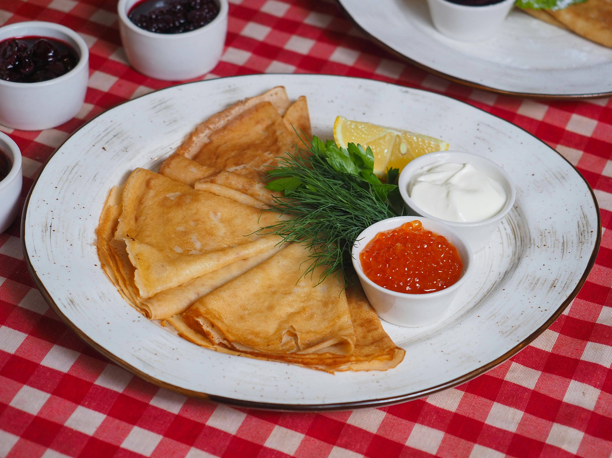

Image Credit
Blini
Blini are thin, crepe-like pancakes popular in Russian cuisine, often served with sour cream, caviar, or smoked salmon.
Cook time
25 minutes
Calories
80
Instructions
- Combine flour, salt, and baking powder in a bowl.
- In a separate bowl, whisk together milk, egg, and melted butter.
- Mix the wet ingredients into the dry ingredients until smooth.
- Heat a non-stick skillet over medium heat and lightly grease it.
- Pour a small amount of batter into the skillet, swirling to cover the bottom.
- Cook until the edges lift, then flip and cook the other side.
- Repeat with remaining batter.
- Serve warm with desired toppings.
Recipe Credits: Link